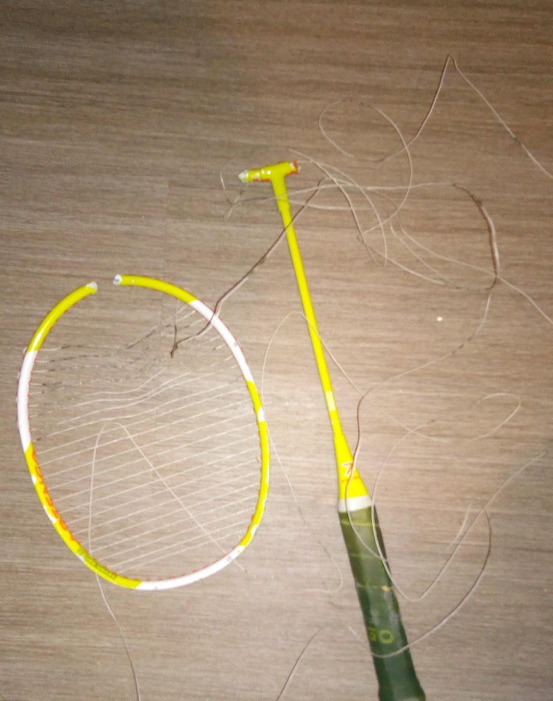

LE BLOG DE LARA
Le revers du badminton
Lara KETTE
LES ÉTAPES DE MON RÉTABLISSEMENT
Le début des ennuis
Un entrainement un peu trop intensif, March 1, 2020
Bienvenue sur mon blog! Pour celles et ceux qui ne me connaissent pas, je suis dans le badminton de haut niveau depuis quelques années. Récemment je me suis blessée lors d'un entrainement. Je vais passer quelques mois pour me rétablir et je pense qu'en parler ici me permettera de me remettre plus vite de ce malencontreux accident.
Je viens d'entrer au service d'observation je vous tiens au courant et vous remercie d'avance pour votre lecture.
Second jour
Un peu moins optimiste, March 2, 2020
Premier pronostique des médecins Alors qu'ils avaient l'air plutôt confiant au premier abord, après avoir commencer à retirer la corde leurs craintes se sont confirmées, il parait que mon cas est un peu plus délicat que prévu. Je vous ai mis deux photos, une du début de l'opération et une après celle-ci, comme vous le voyez, il va falloir le faire en plusieurs fois car après quelques heures ils sont loins d'avoir tout enlevé.
Ce qui me rassure c'est qu'ils m'ont assurés que je pourrais pratiquer le bad de nouveau après un peu de rééducation. Ils ont touché ma corde sensible: je garde espoir mais je vous avoue que passer plusieurs semaines dans cet état ne m'enthousiasme pas vraiment. Prochaine opération vendredi, je vous tiens au courant.
Vendredi
Le week end approche ...March 6, 2020
Un peu de retard Les opérations devaient commencer aujourd'hui, mais pour des raisons de surcharge des services, on me fait patienter jusqu'a demain. Il parrait que le week end va être long, je vous tiendrai au courant dès lundi car je penses qu'entre les interventions je vais juste avoir envie de me reposer. A part ça la journée a été longue comme mon voisin de chambre a quitté les lieux.
Dernier lundi à l'hôpital
La fin approche, March 9, 2020
Pas moins de 10 opérations, c'est ce qu'il a été necessaire pour enlever la corde et nettoyer les plaies pour préparer une cicatrisation à la colle.
Comme j'ai passé presque tout mon temps en anesthésie, c'est passé plutôt vite et je n'ai pas grand chose de nouveau à vous dire. Ah si, comme je serai repeinte pour cacher les cicatrices, j'ai choisi de changer de couleur, je vous garde la surprise. J'ai pris quelques photos entre les opérations, je vous poste ça et je vais me coucher.
N'empêche que ça fait bizarre de ne pas avoir d'être séparée en deux, mais je tiendrai bon, j'ai plus d'une corde à mon arc... Le recollage devrait se faire demain, je secherai la nuit. Vendredi un peu de peinture et je peux sortir, il n'y aura presque pas de rééducation si j'en crois les spécialistes qui m'ont parler ce matin.
Comment vais-je sortir de ce cocon?
Un platrage plus long que prévuMarch 12, 2020
Le retour de la momie Cela fait quelques jours que je suis dans le platre, et on me l'enlève demain. J'ai hate de pouvoir bouhger à nouveau et je vous ai réservé une surprise

No paint, no gain
Jour finalMarch 13, 2020
On va pigmenter l'experience Voila, c'est juste une sous couche (pas volante), la peinture finale sera faite dans 1h. Je n'ai pas osée vous montrer mes cicatrices, j'ai attendu la première couche de peinture pour dévoiler l'allure finale. Je pense que je vais en profiter pour changer de couleur, je vous garde la surprise.
Désolé pour l'attente
Peu d'avancementMarch 19, 2020
On va pigmenter l'experience Je viens de passer une semaine pour rien dans cet hôpital. Quelle deception, avec le coronavirus, l'hopital est surchargé et je n'ai toujours pas reçu ma couche de peinture finale. Je vais sortir et la faire faire par un indépendant
Cette fois c'est bien fini
Jour finalMarch 13, 2020
Enfin une nouvelle couleur
Du coup j'ai fait faire ça bien, 2 couches chez un spécialiste, dites moi ce que vous en pensez
!!
Personnelement je trouve que le rouge me va bien et comme vous pouvez le constater, j'ai
retrouvée le sourire : ) Cette experience m'a fait grandir et je pense que c'est par ses erreurs
que l'on apprend le plus, jamais plus d'entrainement en étant fatiguée avant même de commencer.
Merci de m'avoir suivi ça m'a fait chaud au coeur et je vais essayer de partager cette
experience pour aider les gens.
YAHOU
Hey, moi c'est Lara, je suis là pour partager mon experience et en tirer un peu de soutient (et oui, toute relation est à double sens).
Mon palmarès
-
Jeux Olympiques de Rio 2018
Médaille d'or en simple -
 Jeux Olympiques de Rio 2018
Jeux Olympiques de Rio 2018
Médaille de bronze en double -
Championnats de France 2019
Médaille d'or simple et double mixte